Боевик или экшен-фильм (экшн-фильм) (англ. action movie — букв. фильм действия) — жанр кинематографа, в котором основное внимание уделяется насилию: перестрелкам, дракам, погоням и т. д. Боевики часто обладают высоким бюджетом, изобилуют каскадёрскими трюками и спецэффектами. Большинство боевиков иллюстрируют известный тезис «добро должно быть с кулаками». Фильмы этого жанра зачастую не обладают сложным сюжетом, главный герой обычно сталкивается со злом в самом очевидном его проявлении: терроризм, похищение, убийство, коррупция, несправедливость. Не находя иного выхода, главный герой решает прибегнуть к насилию. В развязке фильма отрицательные персонажи обычно оказываются убиты, реже арестованы. Число убитых отрицательных персонажей и их пособников может достигать десятков и даже сотен. Почти все боевики не рекомендованы к просмотру подросткам младше 16 лет, хотя обычно эти лица составляют значительную часть зрителей фильмов такого рода. Считается, что популяризация так называемой «эстетики насилия» во многом обязана таким лентам.
Фильмы, посвящённые боевым искусствам обычно рассматриваются как поджанр боевика.
Фильм ужасов (разг. ужастик, хоррор; англ. horror film, horror movie) — жанр художественного фильма. Тематически обширный и разнообразный круг фильмов, призванных вызвать у зрителей чувство страха, тревоги и неопределённости, создать напряжённую атмосферу ужаса или мучительного ожидания чего-либо ужасного — так называемый эффект «саспенс» (от англ. suspense — неопределённость). Однако, касательно именования жанра существуют и другие мнения. Так, известный в хоррор-кругах актёр Кристофер Ли в одном из своих интервью, данном в 1975 году, утверждал, что термин horror неверен, поскольку ужас подразумевает чувство отвращения или омерзения, что отнюдь не является целью этих картин, по крайней мере почти всегда. Условность таких фильмов делает их безвредными. Он настаивал на употреблении термина «film du fantastique» (фильм фантазии). Таким же термином французы обозначают определённый тип фильмов ужасов.
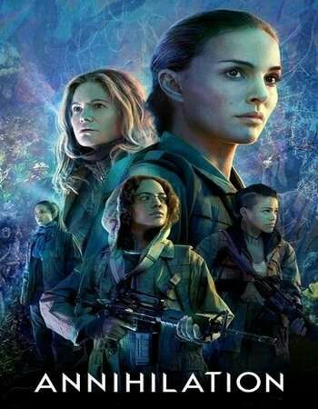
«Аннигиляция» (англ. Annihilation) — научно-фантастический фильм режиссёра Алекса Гарленда. Сценарий основан на одноимённом романе Джеффа Вандермеера. В главной роли Натали Портман. В прокат в США вышел 23 февраля 2018 года, в России c 8 марта.
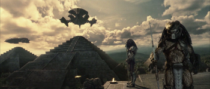
«Чужой против Хищника» (англ. AVP: Alien vs. Predator) — фантастический экшн-хоррор режиссёра Пола У. С. Андерсона, выступившего также в качестве одного из авторов сценария фильма. Главные роли в картине исполнили Санаа Лэтэн, Лэнс Хенриксен, Рауль Бова. Фильм является кроссовером тетралогии Ридли Скота «Чужой» и дилогии Джона Мактирнана «Хищник».
В центре сюжета фильма находится противостояние чужих и хищников в древнем городе на глубине 700 м подо льдом в Антарктиде, где также оказывается человеческая экспедиция, состоящая из учёных и военных.
Премьера фильма состоялась 12 августа 2004 года в Пуэрто-Рико и Таиланде. На следующий день, 13 августа, фильм вышел на экраны США. Премьера в России состоялась 21 октября 2004 года. В 2005 году фильм был номинирован на премию «Золотая малина» в категории «Худший ремейк/сиквел». На производство картины было затрачено 60 миллионов долларов, а общемировые сборы составили более 172 миллионов долларов. В конце 2007 года на экраны вышел сиквел фильма: «Чужие против Хищника: Реквием».
Награды и номинации:
Фильм «Чужой против Хищника» имеет 1 награду и ещё 2 номинации, оставшиеся без победы. Ниже перечислены основные награды и номинации. Полный список см. на IMDb.com.
• Премия «Золотая малина», номинация
• 2005 — Худший ремейк/сиквел
• Премия «Fangoria Chainsaw Awards», номинация
• 2005 — Худший фильм
• Премия «BMI Film & TV Awards», награда
• 2005 — BMI Film Music Award (Гаральд Клозер)
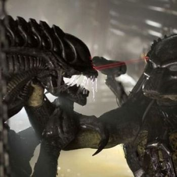
«Чужие против Хищника: Реквием» (англ. Aliens vs. Predator: Requiem; США, 2007) — фантастический боевик Колина и Грега Штраусов, являющийся продолжением фильма «Чужой против Хищника» 2004 года. Фильм объединяет два фантастических цикла: «Чужой» и «Хищник», и персонажей из них.
Это единственный фильм про Чужого и Хищника, который не имеет новеллизации.
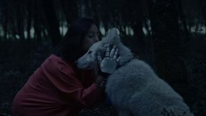
AKA:
Movie: Black Hollow Cage
Storyline: A girl who lives secluded in a house in the woods with the only company of her father and a wolfhound finds among the trees a mysterious cubic device.
Genres: Drama, Horror, Sci-Fi
Actor: Lowena McDonell, Julian Nicholson, Haydée Lysander
Director: Sadrac González-Perellón (as Sadrac González)
Country: Spain
Production Co: Asallam Films
Duration: 105 min
Release: 7 December 2017 (South Korea)
«Вычислитель» — российский фантастический художественный фильм 2014 года по мотивам одноимённой повести российского писателя-фантаста Александра Громова.
Прокат в России — с 18 декабря 2014, дистрибьюторская компания Централ партнершип.
Телевизионная премьера фильма состоялась 11 июля 2018 года на телеканале Россия-1.
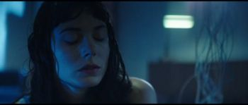
Movie: The Capture
Storyline: A group of scientists discover a soul guide and perform an experiment on her even though such ungodly act could cause space and time to bend and alter the very fabric of the universe.
Genres: CSci-Fi, Thriller
Actor: Jonathan Howard, Nora-Jane Noone, Jordan Tisdale
Director: Jim Agnew
Country: USA
Production Co: Science Machine
Duration: 78 min
Release: 2018 (USA)
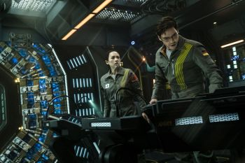
«Парадокс Кловерфилда» (англ. The Cloverfield Paradox) — американский фантастический фильм ужасов режиссёра Джулиуса Она. Это третий фильм франшизы «Cloverfield», в которую так же входят фильмы «Монстро» и «Кловерфилд, 10».
Премьера фильма неоднократно переносилась, а название фильма несколько раз менялось - первым утвержденным наименованием стала «Частица Бога» (англ. God Particle), затем название фильма было вновь изменено на «Станция Кловерфилд» (англ. The Cloverfield Station).
Первый трейлер вышел 4 февраля 2018 года, под обновлённым названием, и в тот же день фильм был показан на сервисе Netflix.
Movie: Crossbreed
Storyline: In the near future, the President of the New United States of America hires a team of military veterans to retrieve an alien bio-weapon from a top secret research facility orbiting the Earth.
Genres: Action, Comedy, Sci-Fi
Actor: Vivica A. Fox, Daniel Baldwin, Stink Fisher
Director: Brandon Slagle
Production Co: Jaguar Cinema, Jaguar Motion Pictures
Duration: 86 min
Release: 5 February 2019 (USA)
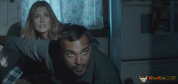
The Diabolical is a 2015 American science fiction horror film directed by Alistair Legrand and written by Legrand and Luke Harvis. It stars Ali Larter as a single mother who battles evil forces in her house. It premiered at SXSW in March 2015 and, after being released internationally, received a limited release in the US in October 2015.
Production:
Larter said that although she liked the mix of genres in the film, what drew her to it was the family dynamic and her character's struggle to protect her children. Legrand said he wanted to make a film that blends science fiction and horror elements together. He was influenced by David Cronenberg for the reality-based monsters, Steven Spielberg's emphasis on likable characters, and John Carpenter's long takes. He also cited how Alien hid its monster, which he said heightened the tension. Legrand did not want to distract audiences with ostentatious homage, so he borrowed only small amounts from each filmmaker. The special effects were practical, a decision that Legrand said aided actors in believably reacting to the threats in the film. Filming took place in February 2014.
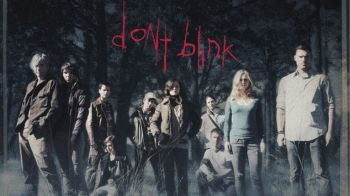
Don't Blink is a 2014 American psychological horror film written and directed by Travis Oates. It stars an ensemble cast that includes Mena Suvari, Brian Austin Green, Joanne Kelly, and Zack Ward, who also produced. A group of ten friends visit a remote resort, which they subsequently find empty. As they attempt to find out what happened to the other guests, they are horrified to find that they too are disappearing. It received a limited release on September 18, 2014.
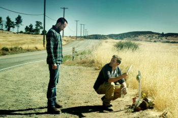
«Паранормальное» (англ. The Endless) — американский фильм ужасов режиссёров Джастина Бенсона и Аарона Мурхеда. В главных ролях: Калли Эрнандес, Тейт Эллингтон и Джеймс Джордан. Выход в широкий прокат в России назначен на 19 июля 2018 года.
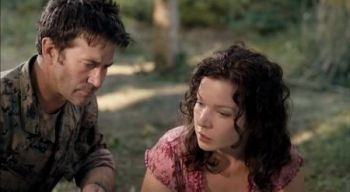
Свирепая Планета - телевизионный фильм совместного производства Syfy Universal и MNG Films, снятый в 2011 году. Съёмки проходили в Ирландии. Это 23-й фильм из серии фильмов ужасов о животных-людоедах.
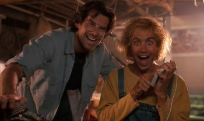
Сюжет рассказывает историю врача, ставящего эксперименты на умственноотсталом человеке, в результате которых умственные способности последнего превосходят мыслимые пределы.
Существуют две версии фильма: оригинальная режиссёрская, длительностью 2 ч. 20 мин., и прокатная сокращенная, 1 ч. 40 мин.
Movie: Hurok (англ. Loop, рус. Петля)
Storyline: A drug dealer and his girlfriend betray their boss on their last mission, and the lead gets stuck in a timeloop.
Genres: Crime, Sci-Fi, Thriller
Actor: Dénes Száraz, Dorina Martinovics, Zsolt Anger
Director: Isti Madarász
Country: Hungary
Production Co: Café Film
Duration: 95 min
Release: 14 April 2016 (Hungary)
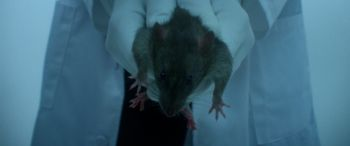
The Mandela Effect is a 2019 science fiction film written and directed by David Guy Levy, starring Charlie Hofheimer as a father grieving for the loss of his daughter, played by Madeleine McGraw, who becomes obsessed with facts and events that many people remember incorrectly. Aleksa Palladino plays his also-grieving wife, while Robin Lord Taylor plays his best friend and brother-in-law. He turns to a washed-up scientist, played by Clarke Peters, to discover that the reality they are experiencing is part of computer simulation.
The Mandela Effect premiered at the Other Worlds Film Festival on October 23, 2019, and was released in the United States on December 6, 2019, by Gravitas Ventures.
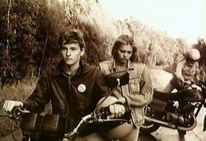
«Посредник» — советский фантастический фильм 1990 года по мотивам повести Александра Мирера «Главный полдень». Сам Мирер критиковал режиссёра Владимира Потапова за то, что картина построена вопреки логике текста, однако свою фамилию с титров не снял.
Фильм снят в подчёркнуто серо-коричневых, мрачных тонах (сепия). Под некоторыми фантастическими деталями зритель может угадать реальные социальные явления.
Съёмки:
• Телескоп из фильма — антенна ТНА-1500 (РТ-64) в Центре космической связи ОКБ МЭИ «Медвежьи озера».
• Сцены в помещениях снимались на Пущинской радиоастрономической обсерватории АКЦ ФИАН.
• По одной из начальных задумок планировалось телескоп взорвать, был построен макет.
• В массовке покидания инопланетянами тел землян в конце фильма участвовали, в том числе, работники ОКБ.
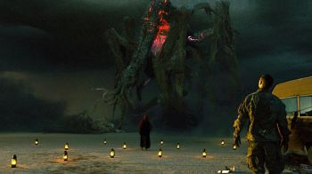
«Монстры 2: Тёмный континент» (англ. Monsters: Dark Continent) — британский фантастический фильм, режиссёра Тома Грина. Продолжение фильма «Монстры», режиссёра Гарета Эдвардса, который на этот раз выступил в качестве исполнительного продюсера картины.
Премьера фильма состоялась в Лондонском кинофестивале 9 октября 2014 года. Премьера фильма в кинотеатрах США и Великобритании состоялась 1 мая 2015 года.
Nekrotronic (formerly Nekromancer) is a 2018 Australian comedy science-fiction horror film. It was co-written and directed by Kiah Roache-Turner, and stars Ben O'Toole and Monica Bellucci. It tells the story of demons that steal people's souls through smartphone apps, and the demon-hunters out to kill them.
It was intended to be a mashup of Ghostbusters, The Matrix, and The Exorcist. The story was inspired by the ICE of William Gibson's Neuromancer.
The film premiered at the 2018 Toronto International Film Festival. In September 2019, it had its Australian debut at the SciFi Film Festival in Sydney.
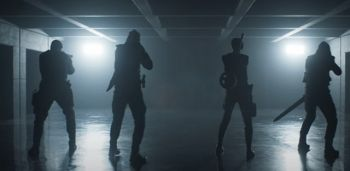
«Бессмертная гвардия» (англ. The Old Guard) — американский фильм 2020 года режиссёра Джины Принс-Байтвуд, сценарий написан Грегом Рукой и основан на одноимённом комиксе. Премьера фильма состоялась на Netflix 10 июля 2020 года.
OtherLife is a 2017 Australian science fiction thriller film directed by Ben C. Lucas. It stars Jessica De Gouw as the co-founder of Otherlife, a company that developed a form of biological virtual reality. When her business partner, played by T.J. Power, insists she license it for unethical use, she struggles to retain control of her invention with the help of her lover, played by Thomas Cocquerel.
The film is loosely based on the novel Solitaire by Kelley Eskridge.
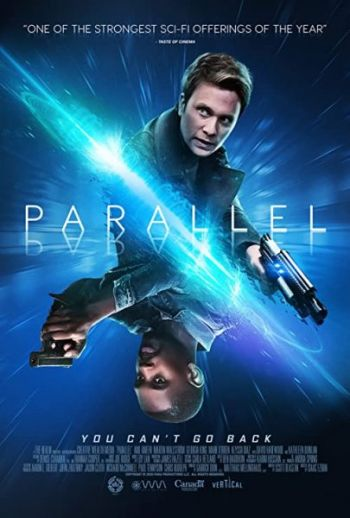
Parallel is a 2018 Canadian science fiction thriller film. The film stars Aml Ameen, Martin Wallström, Georgia King, Mark O'Brien and Alyssa Diaz.
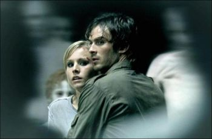
«Пульс» (англ. Pulse) — американский фантастический фильм ужасов 2006 года режиссёра Джима Сонзеро, ремейк японского фильма ужасов «Пульс». Премьера фильма состоялась 11 августа 2006 года. В США фильм собрал $20 264 436, в остальном мире $9 503 148, что в общей сложности составило $29 767 584. В 2008 году direct-to-video вышли вторая и третья части сериала под названиями «Пульс 2: После жизни» и «Пульс 3: Вторжение» соответственно.
Связь и отличия от оригинального фильма:
По сравнению с оригинальным фильмом сюжет фильма оказался более упрощённым и понятным. Кроме того главными героями сделаны студенты.
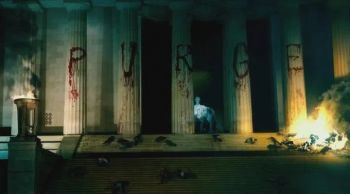
«Судная ночь 3» (англ. The Purge: Election Year — «Чистка: Год Выборов») — триллер-антиутопия 2016 года режиссёра и сценариста Джеймса Демонако, продолжение фильмов «Судная ночь» и «Судная ночь 2». В главных ролях: Фрэнк Грилло, Элизабет Митчелл, Майкелти Уильямсон, Эдвин Ходж. Премьера фильма в США состоялась 1 июля 2016 года, в России — 28 июля 2016 года.
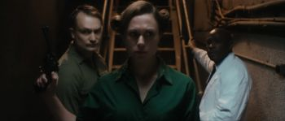
The Rizen is a 2017 horror film written by Matt Mitchell and produced by Clare Pearce for Lost Eye Films, directed by Matt Mitchell for Lost Eye Films and starring Laura Swift, Sally Phillips, Tom Goodman-Hill, Adrian Edmondson , Julian Rhind-Tutt and Bruce Payne. The film was cast and produced by Clare Pearce and for a UK independent film the cast is full of well known cameos.
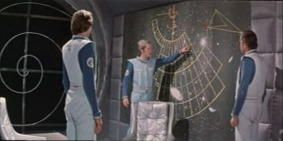
«Звёздный инспектор» — художественный фильм режиссёров Марка Ковалёва и Владимира Полина, снятый на киностудии «Мосфильм» в 1980 году.
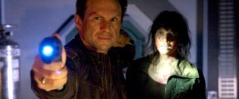
Stranded is a 2013 science fiction-horror film directed and co-written by Roger Christian and Christian Piers Betley (writer/producer) starring Christian Slater, Brendan Fehr, Amy Matysio, and Michael Therriault. Astronauts who are stranded on a lunar mining base, attempt to survive an attack by shapeshifting alien life forms. Filming was at the Canada Saskatchewan Production Studios by Regina, Saskatchewan based Minds Eye Entertainment. The film was one of the last financed by the province's cancelled film employment tax credit and was produced entirely in Saskatchewan.
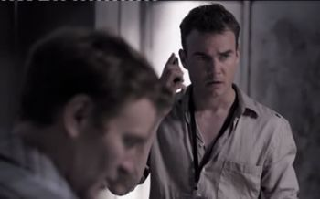
Supercollider is a 2013 Science fiction drama film produced by Jeffery Scott Lando and starring Robin Dunne. The film was poorly received.
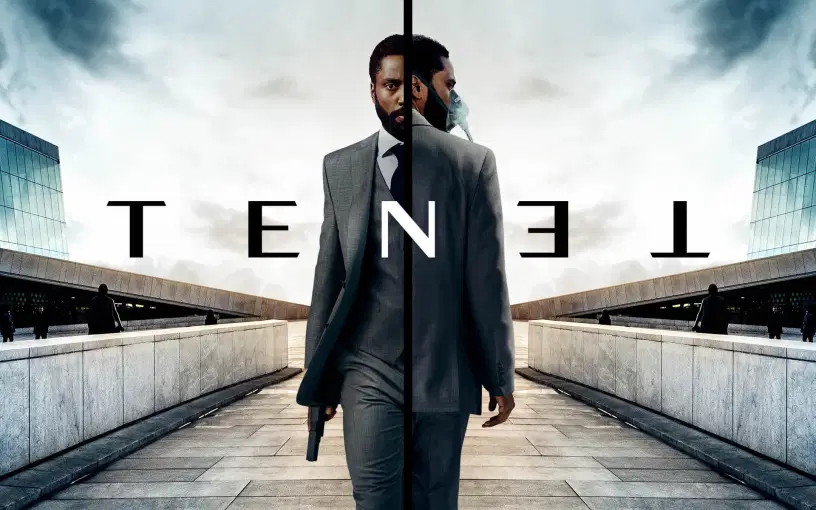
«Довод» (англ. Tenet) — научно-фантастический боевик режиссёра и сценариста Кристофера Нолана. Фильм является совместной продукцией Великобритании и США. В главных ролях снялись Джон Дэвид Вашингтон, Роберт Паттинсон, Элизабет Дебики, Димпл Кападия, Майкл Кейн и Кеннет Брана. Фильм рассказывает о секретном агенте, который должен управлять временем, чтобы предотвратить Третью мировую войну.
Съёмки фильма начались в мае 2019 года и проходили в семи странах: Дании, Эстонии, Индии, Италии, Норвегии, Великобритании и США.
Из-за пандемии COVID-19 дата премьеры фильма трижды откладывалась. Компания Warner Bros. Pictures выпустила фильм в международный прокат 26 августа 2020 года, в американский прокат — 3 сентября. Это первый голливудский блокбастер, вышедший в кинотеатрах после ограничений в связи с пандемией. В мировом прокате «Довод» собрал 356,8 млн долларов, что позволило ему занять третье место в списке самых кассовых фильмов 2020 года. Фильм получил в основном положительные отзывы критиков, которые высоко оценили актёрскую игру, операторскую работу, саундтрек, монтаж, костюмы и режиссуру, хотя некоторые критиковали запутанный сюжет, равнодушный тон повествования и монтаж звука.
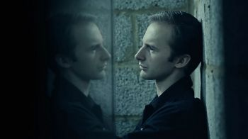
Movie: Twenty Twenty-Four
Storyline: A lone scientist maintains an underground bunker for the coming global nuclear disaster. But after becoming prematurely isolated, he slowly begins to question his own reality and whether he is truly alone. Director Richard Mundy's immersive psychological thriller, is a tense and unsettling nightmare you'll never be sure you've woken up from.
Genres: Mystery, Sci-Fi, Thriller
Actor: Andrew Kinsler, Peter McCrohon
Director: Richard Mundy
Country: UK
Production Co: Entity Film Co, Ripsaw Pictures
Duration: 88 min
Release: 7 May 2016 (UK)
The Wave is a 2019 film directed by Gille Klabin distributed by Epic Pictures.